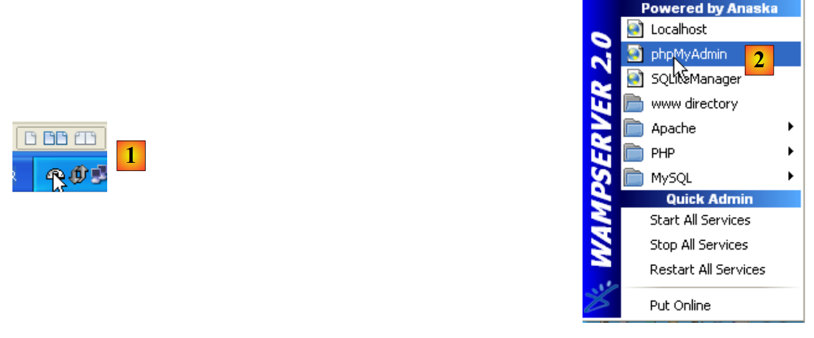
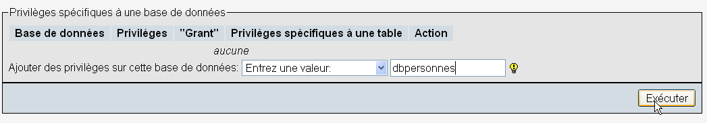
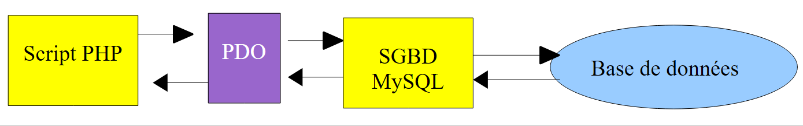
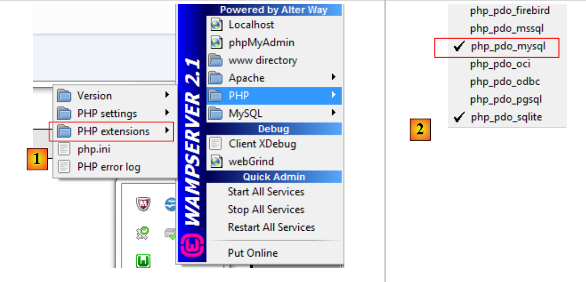

7. Utilisation du SGBD MySql
Nous allons écrire des scripts PHP utilisant une base de données MySQL :
 |
Le SGBD MySQL est inclus dans le paquetage WampServer (cf paragraphe 2.1.1). Nous montrons comment créer une base de données ainsi qu'un utilisateur MySQL.
 |
- une fois lancé, WampServer peut être administré à partir d'une icône [1] placée en bas à droite de la barre des tâches.
- en [2], on lance l'outil d'administration de MySQL
On crée une base de données [dbpersonnes] :

On crée un utilisateur [admpersonnes] avec le mot de passe [nobody] :
 |  |
 |
- en [1], le nom de l'utilisateur
- en [2], la machine du SGBD sur lequel on lui donne des droits
- en [3], son mot de passe
- en [4], idem
- en [5], on ne donne aucun droit à cet utilisateur
- en [6], on le crée
 |
- en [7], on revient sur la page d'accueil de phpMyAdmin
- en [8], on utilise le lien [Privileges] de cette page pour aller modifier ceux de l'utilisateur [admpersonnes] [9].
 |

- en [10], on indique qu'on veut donner à l'utilisateur [admpersonnes] des droits sur la base de données [dbpersonnes]
- en [11], on valide le choix
 |
- avec le lien [12] [Tout cocher], on accorde à l'utilisateur [admpersonnes] tous les droits sur la base de données [dbpersonnes] [13]
- on valide en [14]
Désormais nous avons :
- une base de données MySQL [dbpersonnes]
- un utilisateur [admpersonnes / nobody] qui a tous les droits sur cette base de données
Nous allons écrire des scripts PHP pour exploiter la base de données. PHP dispose de diverses bibliothèques pour gérer les bases de données. Nous utiliserons la bibliothèque PDO (PHP Data Objects) qui s'interface entre le code PHP et le SGBD :
 |
La bibliothèque PDO permet au script PHP de s'abstraire de la nature exacte du SGBD utilisé. Ainsi ci-dessus, le SGBD MySQL peut être remplacé par le SGBD Postgres avec un impact minimum sur le code du script PHP. Cette bibliothèque n'est pas disponible par défaut. On peut vérifier sa disponibilité de la façon suivante :
 |
- 1 : à partir de l'icône d'administration de WampServer, on sélectionne l'option [PHP / PHP extensions]
- 2 : on voit les différentes extensions PDO disponibles et celles qui sont actives : [PHP_pdo_mysql] pour le SGBD MySQL, [PHP_pdo_sqlite] pour le SGBD SQL Lite. Pour activer une extension, il suffit de cliquer dessus. L'interpréteur PHP est alors relancé avec la nouvelle extension activée.
7.1. Connexion à une base MySQL – 1 (mysql_01)
La connexion à un SGBD se fait par la construction d'un objet PDO. Le constructeur admet différents paramètres :
La signification des paramètres est la suivante :
$dsn | (Data Source Name) est une chaîne précisant la nature du SGBD et sa localisation sur internet. La chaîne "mysql:host=localhost" indique qu'on a affaire à un SGBD MySQL opérant sur le serveur local. Cette chaîne peut comprendre d'autres paramètres, notamment le port d'écoute du SGBD et le nom de la base à laquelle on veut se connecter : "mysql:host=localhost:port=3306:dbname=dbpersonnes". |
$user | identifiant de l'utilisateur qui se connecte |
$passwd | son mot de passe |
$driver_options | un tableau d'options pour le pilote du SGBD |
Seul le premier paramètre est obligatoire. L'objet ainsi construit sera ensuite le support de toutes les opérations faites sur la base de données à laquelle on s'est connecté. Si l'objet PDO n'a pu être construit, une exception de type PDOException est lancée.
Voici un exemple de connexion :
<?php
// connexion à une base MySql
// l'identité de l'utilisateur est (admpersonnes,nobody)
$ID = "admpersonnes";
$PWD = "nobody";
$HOTE = "localhost";
try {
// connexion
$dbh = new PDO("mysql:host=$HOTE", $ID, $PWD);
print "Connexion réussie\n";
// fermeture
$dbh = null;
} catch (PDOException $e) {
print "Erreur : " . $e->getMessage() . "\n";
exit();
}
Résultats :
Commentaires
- ligne 11 : la connexion à un SGBD se fait par la construction d'un objet PDO. Le constructeur est ici utilisé avec les paramètres suivants :
- une chaîne précisant la nature du SGBD et sa localisation sur internet. La chaîne "mysql:host=localhost" indique qu'on a affaire à un SGBD MySQL opérant sur le serveur local. Le port n'a pas été précisé. Le port 3306 est alors utilisé par défaut. Le nom de la base de données n'est pas indiqué non plus. Il y aura alors connexion au SGBD MySQL, la sélection d'une base précise se faisant plus tard.
- un identifiant d'utilisateur
- son mot de passe
- ligne 14 : la fermeture de la connexion se fait par destruction de l'objet PDO créé initialement.
- ligne 15 : la connexion à un SGBD peut échouer. Dans ce cas, une exception de type PDOException est lancée.
7.2. Création d'une table MySQL (mysql_02)
<?php
// connexion à la base MySql
// l'identité de l'utilisateur
$ID = "admpersonnes";
$PWD = "nobody";
// identité de la base
$DSN = "mysql:host=localhost;dbname=dbpersonnes";
// connexion
list($erreur, $connexion) = connecte($DSN, $ID, $PWD);
if ($erreur) {
print "Erreur lors de la connexion à la base [$DSN] sous l'identité ($ID,$PWD) : $erreur\n";
exit;
}
// suppression de la table personnes si elle existe
$requête = "drop table personnes";
$erreur = exécuteRequête($connexion, $requête);
//y-a-t-il eu une erreur ?
if ($erreur)
print "$requête : Erreur ($erreur)\n";
else
print "$requête: Exécution réussie\n";
// création de la table personnes
$requête = "create table personnes (prenom varchar(30) NOT NULL, nom varchar(30) NOT NULL, age integer NOT NULL, primary key(nom,prenom))";
$erreur = exécuteRequête($connexion, $requête);
//y-a-t-il eu une erreur ?
if ($erreur)
print "$requête : Erreur ($erreur)\n";
else
print "$requête: Exécution réussie\n";
// on se déconnecte et on quitte
déconnecte($connexion);
exit;
// ---------------------------------------------------------------------------------
function connecte($dsn, $login, $pwd) {
// connecte ($login,$pwd) à la base $dsn
// rend l'id de la connexion ainsi qu'un code d'erreur
try {
// connexion
$dbh = new PDO($dsn, $login, $pwd);
// retour sans erreur
return array("", $dbh);
} catch (PDOException $e) {
// retour avec erreur
return array($e->getMessage(), null);
}
}
// ---------------------------------------------------------------------------------
function déconnecte($connexion) {
// ferme la connexion identifiée par $connexion
$connexion = null;
}
// ---------------------------------------------------------------------------------
function exécuteRequête($connexion, $sql) {
// exécute la requête $sql sur la connexion $connexion
try {
$connexion->exec($sql);
// retour sans erreur
return "";
} catch (PDOException $e) {
// retour avec erreur
return $e->getMessage();
}
}
Résultats :
drop table personnes: Exécution réussie
create table personnes (prenom varchar(30) NOT NULL, nom varchar(30) NOT NULL, age integer NOT NULL, primary key(nom,prenom)): Exécution réussie
Dans PHPMyAdmin, on peut voir la présence de la table :
 |
Commentaires
- lignes 38-50 : la fonction connecte crée une connexion à un SGBD. Elle rend un tableau ($erreur, $connexion) où $connexion est la connexion créée ou null s'il n'a pu être créée. Dans ce dernier cas, $erreur est un message d'erreur.
- lignes 53-56 : la fonction déconnecte ferme une connexion
- ligne 59 : la fonction exécuteRequête permet d'exécuter un ordre SQL sur une connexion. La connexion est un objet PDO. La méthode utilisée pour exécuter un ordre SQL sur un objet PDO est la méthode exec (ligne 63). L'exécution de la requête peut lancer une PDOException. Aussi celle-ci est-elle gérée. La fonction rend un message d'erreur en cas d'erreur, une chaîne vide sinon.
7.3. Remplissage de la table personnes (mysql_03)
Le script suivant exécute des ordres SQL trouvés dans le fichier texte [creation.txt] suivant :
drop table personnes
create table personnes (prenom varchar(30) not null, nom varchar(30) not null, age integer not null, primary key (nom,prenom))
insert into personnes values('Paul','Langevin',48)
insert into personnes values ('Sylvie','Lefur',70)
insert into personnes values ('Pierre','Nicazou',35)
insert into personnes values ('Geraldine','Colou',26)
insert into personnes values ('Paulette','Girond',56)
<?php
// connexion à la base MySql
// l'identité de l'utilisateur
$ID = "admpersonnes";
$PWD = "nobody";
// identité de la base
$DSN = "mysql:host=localhost;dbname=dbpersonnes";
// identité du fichier texte des commandes SQL à exécuter
$TEXTE = "creation.txt";
// connexion
list($erreur, $connexion) = connecte($DSN, $ID, $PWD);
if ($erreur) {
print "Erreur lors de la connexion à la base [$DSN] sous l'identité ($ID,$PWD) : $erreur\n";
exit;
}
// création et remplissage de la table
$erreurs = exécuterCommandes($connexion, $TEXTE, 1, 0);
//affichage nombre d'erreurs
print "il y a eu $erreurs[0] erreurs\n";
for ($i = 1; $i < count($erreurs); $i++)
print "$erreurs[$i]\n";
// on se déconnecte et on quitte
déconnecte($connexion);
exit;
// ---------------------------------------------------------------------------------
function connecte($dsn, $login, $pwd) {
...
}
// ---------------------------------------------------------------------------------
function déconnecte($connexion) {
...
}
// ---------------------------------------------------------------------------------
function exécuteRequête($connexion, $sql) {
// exécute la requête $sql sur la connexion $connexion
// rend 1 msg d'erreur si erreur, la chaîne vide sinon
...
}
// ---------------------------------------------------------------------------------
function exécuterCommandes($connexion, $SQL, $suivi=0, $arrêt=1) {
// utilise la connexion $connexion
// exécute les commandes SQL contenues dans le fichier texte $SQL
// ce fichier est un fichier de commandes SQL à exécuter à raison d'une par ligne
// si $suivi=1 alors chaque exécution d'un ordre SQL fait l'objet d'un affichage indiquant sa réussite ou son échec
// si $arrêt=1, la fonction s'arrête sur la 1ère erreur rencontrée sinon elle exécute ttes les commandes sql
// la fonction rend un tableau (nb d'erreurs, erreur1, erreur2, ...)
// on vérifie la présence du fichier $SQL
if (! file_exists($SQL))
return array(1, "Le fichier $SQL n'existe pas");
// exécution des requêtes SQL contenues dans $SQL
// on les met dans un tableau
$requêtes = file($SQL);
// on les exécute - au départ pas d'erreurs
$erreurs = array(0);
for ($i = 0; $i < count($requêtes); $i++) {
//a-t-on une requête vide
if (preg_match("/^\s*$/", $requêtes[$i]))
continue;
// exécution de la requête $i
$erreur = exécuteRequête($connexion, $requêtes[$i]);
//y-a-t-il eu une erreur ?
if ($erreur) {
// une erreur de plus
$erreurs[0]++;
// msg d'erreur
$msg = "$requêtes[$i] : Erreur ($erreur)\n";
$erreurs[] = $msg;
// suivi écran ou non ?
if ($suivi)
print "$msg\n";
// on s'arrête ?
if ($arrêt)
return $erreurs;
} else
if ($suivi)
print "$requêtes[$i] : Exécution réussie\n";
}//for
// retour
return $erreurs;
}
Les résultats écran :
drop table personnes : Exécution réussie
create table personnes (prenom varchar(30) not null, nom varchar(30) not null, age integer not null, primary key (nom,prenom)) : Exécution réussie
insert into personnes values('Paul','Langevin',48) : Exécution réussie
insert into personnes values ('Sylvie','Lefur',70) : Exécution réussie
insert into personnes values ('Pierre','Nicazou',35) : Exécution réussie
insert into personnes values ('Geraldine','Colou',26) : Exécution réussie
insert into personnes values ('Paulette','Girond',56) : Exécution réussie
il y a eu 0 erreurs
Les insertions faites sont visibles avec PhpMyAdmin :
 |
Commentaires
La nouveauté réside dans la fonction exécuterCommandes des lignes 48-90. Cette fonction exécute sur la connexion $connexion les ordres SQL trouvés dans le fichier texte de nom $SQL. Elle rend un tableau d'erreurs ($nbErreurs, $msg1, $msg2, …) où $nbErreurs est le nombre d'erreurs, $msgi le message d'erreur n° i. S'il n'y a pas d'erreurs, le tableau rendu est le tableau array(0).
7.4. Exécution de requêtes SQL quelconques (mysql_04)
Le script suivant montre l'exécution des ordres SQL du fichier texte [sql.txt] suivant :
select * from personnes
select nom,prenom from personnes order by nom asc, prenom desc
select * from personnes where age between 20 and 40 order by age desc, nom asc, prenom asc
insert into personnes values('Josette','Bruneau',46)
update personnes set age=47 where nom='Bruneau'
select * from personnes where nom='Bruneau'
delete from personnes where nom='Bruneau'
select * from personnes where nom='Bruneau'
xselect * from personnes where nom='Bruneau'
Parmi ces ordres SQL, il y a l'ordre select qui ramène des résultats de la base de données, les ordres insert, update, delete qui modifient la base sans ramener de résultats et enfin des ordres erronés tels que le dernier (xselect).
<?php
// connexion à la base MySql
// l'identité de l'utilisateur
$ID = "admpersonnes";
$PWD = "nobody";
// identité de la base
$DSN = "mysql:host=localhost;dbname=dbpersonnes";
// identité du fichier texte des commandes SQL à exécuter
$TEXTE = "sql.txt";
// connexion
list($erreur, $connexion) = connecte($DSN, $ID, $PWD);
if ($erreur) {
print "Erreur lors de la connexion à la base [$DSN] sous l'identité ($ID,$PWD) : $erreur\n";
exit;
}
// exécution des ordres SQL
$erreurs = exécuterCommandes($connexion, $TEXTE, 1, 0);
//affichage nombre d'erreurs
print "il y a eu $erreurs[0] erreur(s)\n";
for ($i = 1; $i < count($erreurs); $i++)
print "$erreurs[$i]\n";
// on se déconnecte et on quitte
déconnecte($connexion);
exit;
// ---------------------------------------------------------------------------------
function connecte($dsn, $login, $pwd) {
// connecte ($login,$pwd) à la base $dsn
// rend l'id de la connexion ainsi qu'un msg d'erreur
...
}
// ---------------------------------------------------------------------------------
function déconnecte($connexion) {
...
}
// ---------------------------------------------------------------------------------
function exécuteRequête($connexion, $sql) {
// exécute la requête $sql sur la connexion $connexion
// rend un tableau de 2 éléments ($erreur,$résultat)
// on détermine si c'est un select ou non
$commande = "";
if (preg_match("/^\s*(\S+)/", $sql, $champs)) {
$commande = $champs[0];
}
// exécution de la commande
try {
if (strtolower($commande) == "select") {
$res = $connexion->query($sql);
} else {
$res = $connexion->exec($sql);
if($res===FALSE){
$info=$connexion->errorInfo();
return array($info[2],null);
}
}
// retour sans erreur
return array("", $res);
} catch (PDOException $e) {
// retour avec erreur
return array($e->getMessage(), null);
}
}
// ---------------------------------------------------------------------------------
function exécuterCommandes($connexion, $SQL, $suivi=0, $arrêt=1) {
// utilise la connexion $connexion
// exécute les commandes SQL contenues dans le fichier texte $SQL
// ce fichier est un fichier de commandes SQL à exécuter à raison d'une par ligne
// si $suivi=1 alors chaque exécution d'un ordre SQL fait l'objet d'un affichage indiquant sa réussite ou son échec
// si $arrêt=1, la fonction s'arrête sur la 1ère erreur rencontrée sinon elle exécute ttes les commandes sql
// la fonction rend un tableau (nb d'erreurs, erreur1, erreur2, ...)
// on vérifie la présence du fichier $SQL
if (!file_exists($SQL))
return array(1, "Le fichier $SQL n'existe pas");
// exécution des requêtes SQL contenues dans $TEXTE
// on les met dans un tableau
$requêtes = file($SQL);
// on les exécute - au départ pas d'erreurs
$erreurs = array(0);
for ($i = 0; $i < count($requêtes); $i++) {
//a-t-on une requête vide
if (preg_match("/^\s*$/", $requêtes[$i]))
continue;
// exécution de la requête $i
list($erreur, $res) = exécuteRequête($connexion, $requêtes[$i]);
//y-a-t-il eu une erreur ?
if ($erreur) {
// une erreur de plus
$erreurs[0]++;
// msg d'erreur
$msg = "$requêtes[$i] : Erreur ($erreur)\n";
$erreurs[] = $msg;
// suivi écran ou non ?
if ($suivi)
print "$msg\n";
// on s'arrête ?
if ($arrêt)
return $erreurs;
} else
if ($suivi) {
print "$requêtes[$i] : Exécution réussie\n";
// infos sur le résultat de la requête exécutée
afficherInfos($res);
}
}//for
// retour
return $erreurs;
}
// ---------------------------------------------------------------------------------
function afficherInfos($résultat) {
// affiche le résultat $résultat d'une requête sql
// s'agissait-il d'un select ?
if ($résultat instanceof PDOStatement) {
// on affiche les noms des champs
$titre = "";
$nbColonnes = $résultat->columnCount();
for ($i = 0; $i < $nbColonnes; $i++) {
$infos = $résultat->getColumnMeta($i);
$titre.=$infos['name'] . ",";
}
// on enlève le dernier caractère ,
$titre = substr($titre, 0, strlen($titre) - 1);
// on affiche la liste des champs
print "$titre\n";
// ligne séparatrice
$séparateurs = "";
for ($i = 0; $i < strlen($titre); $i++) {
$séparateurs.="-";
}
print "$séparateurs\n";
// données
foreach ($résultat as $ligne) {
$data = "";
for ($i = 0; $i < $nbColonnes; $i++) {
$data.=$ligne[$i] . ",";
}
// on enlève le dernier caractère ,
$data = substr($data, 0, strlen($data) - 1);
// on affiche
print "$data\n";
}
} else {
// ce n'était pas un select
print " $résultat lignes(s) a (ont) été modifiée(s)\n";
}
}
Les résultats écran :
select * from personnes
: Exécution réussie
prenom,nom,age
--------------
Geraldine,Colou,26
Paulette,Girond,56
Paul,Langevin,48
Sylvie,Lefur,70
Pierre,Nicazou,35
select nom,prenom from personnes order by nom asc, prenom desc : Exécution réussie
nom,prenom
----------
Colou,Geraldine
Girond,Paulette
Langevin,Paul
Lefur,Sylvie
Nicazou,Pierre
select * from personnes where age between 20 and 40 order by age desc, nom asc, prenom asc : Exécution réussie
prenom,nom,age
--------------
Pierre,Nicazou,35
Geraldine,Colou,26
insert into personnes values('Josette','Bruneau',46) : Exécution réussie
1 lignes(s) a (ont) été modifiée(s)
update personnes set age=47 where nom='Bruneau' : Exécution réussie
1 lignes(s) a (ont) été modifiée(s)
select * from personnes where nom='Bruneau' : Exécution réussie
prenom,nom,age
--------------
Josette,Bruneau,47
delete from personnes where nom='Bruneau' : Exécution réussie
1 lignes(s) a (ont) été modifiée(s)
select * from personnes where nom='Bruneau' : Exécution réussie
prenom,nom,age
--------------
xselect * from personnes where nom='Bruneau' : Erreur (You have an error in your SQL syntax; check the manual that corresponds to your MySQL server version for the right syntax to use near 'xselect * from personnes where nom='Bruneau'' at line 1)
il y a eu 1 erreur(s)
xselect * from personnes where nom='Bruneau' : Erreur (You have an error in your SQL syntax; check the manual that corresponds to your MySQL server version for the right syntax to use near 'xselect * from personnes where nom='Bruneau'' at line 1)
Commentaires
Chacune des commandes du fichier texte [sql.txt] est exécutée par la fonction exécuteRequête de la ligne 43.
- ligne 43 : les deux paramètres de la fonction sont la connexion ($connexion) sur laquelle doivent être exécutés les ordres SQL et l'ordre sql ($sql) à exécuter. La fonction rend un tableau de deux valeurs ($erreur,$résultat) où
- $erreur est un message d'erreur éventuellement vide s'il n'y a pas eu d'erreur
- $résultat : le résultat rendu par l'exécution de l'ordre SQL. Ce résultat est différent selon que l'ordre est un ordre select ou bien un ordre insert, update, delete.
- lignes 48-51 : on récupère le 1er élément de l'ordre SQL pour savoir si on affaire à un ordre select ou bien à un ordre insert, update, delete.
- ligne 55 : dans le cas d'un ordre select, celui-ci est exécuté avec la méthode [PDO]->query("ordre select"). Le résultat rendu est un objet de type PDOStatement.
- ligne 57 : dans le cas d'un ordre insert, update, delete, celui-ci est exécuté avec la méthode [PDO]->exec("ordre SQL"). Le résultat rendu est le nombre de lignes modifiées par l'ordre SQL. Ainsi si un ordre SQL delete supprime deux lignes, le résultat rendu est l'entier 2. S'il y a une erreur à l'exécution, le résultat rendu est le booléen false. Dans ce cas, la méthode [PDO]->errorinfo() donne des informations sur l'erreur sous la forme d'un tableau de valeurs. L'élément d'indice 2 de ce tableau est le message d'erreur.
- lignes 58-60 : traitement de l'éventuelle erreur de l'opération [PDO]->exec("ordre SQL").
- lignes 65-68 : traitement de l'éventuelle exception
- ligne 72 : la fonction exécuterCommandes exécute sur la connexion $connexion les commandes SQL stockées dans le fichier texte $SQL. C'est un code que nous avons déjà rencontré à un détail près : la ligne 111.
- ligne 111 : la fonction exécuteRequête a rendu un tableau ($erreur,$résultat) ou $résultat est le résultat de l'exécution d'une commande SQL. Ce résultat est différent selon que l'ordre SQL était un ordre select ou bien un ordre insert, update, delete. La fonction afficherInfos affiche des informations sur ce résultat.
- ligne 122 : si l'ordre SQL était un ordre select, le résultat est de type PDOStatement. Ce type représente une table faite de lignes et de colonnes.
- ligne 125 : la méthode [PDOStatement]->getColumnCount() rend le nombre de colonnes de la table résultat du select
- ligne 127 : la méthode [PDOStatement]->getMeta(i) rend un dictionnaire d'informations sur la colonne n° i de la table résultat du select. Dans ce dictionnaire, la valeur associée à la clé 'name' est le nom de la colonne.
- lignes 127-129 : les noms des colonnes de la table résultat du select sont concaténées dans une chaîne de caractères.
- lignes 141-145 : un objet de type PDOStatement peut être parcouru par une boucle foreach. A chaque itération, l'élément obtenu est une ligne de la table résultat du select sous la forme d'un tableau de valeurs représentant les valeurs des différentes colonnes de la ligne. On affiche toutes ces valeurs avec une boucle for.
- ligne 154 : le résultat de l'exécution d'un ordre insert, update, delete est le nombre de lignes modifiées par l'ordre.